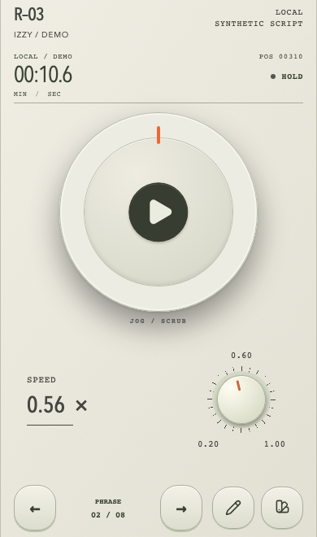
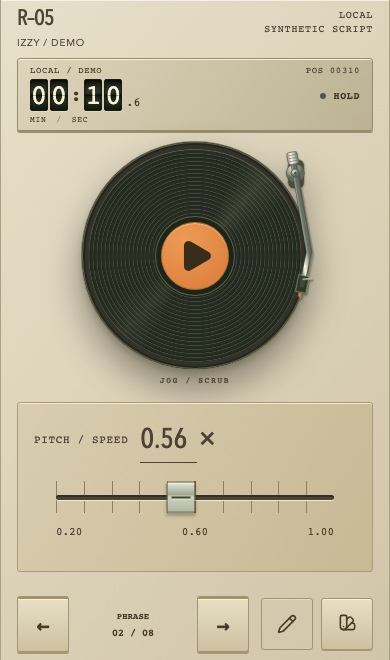
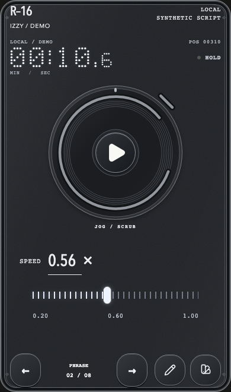
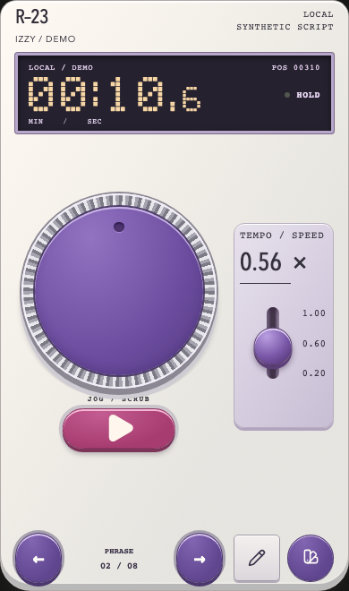
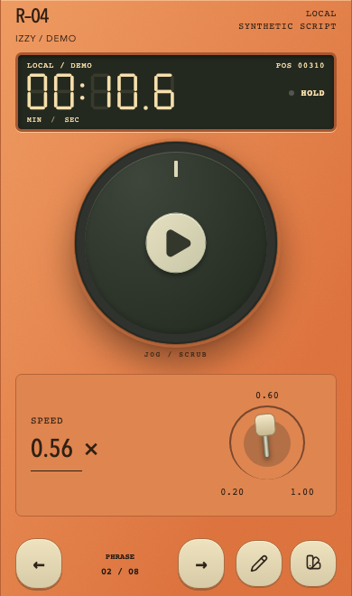
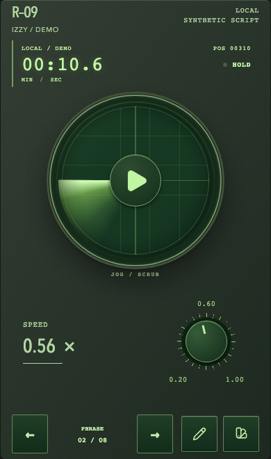
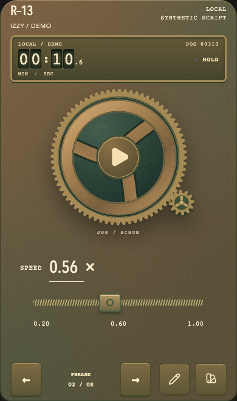
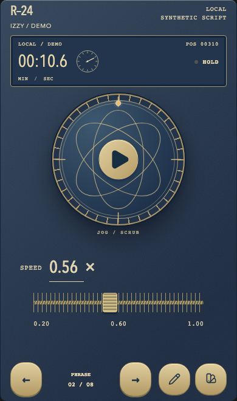
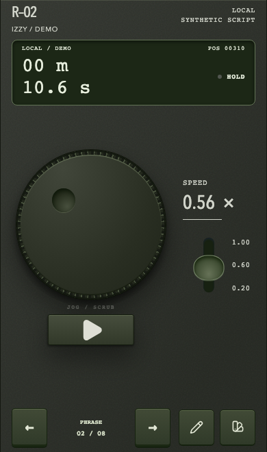
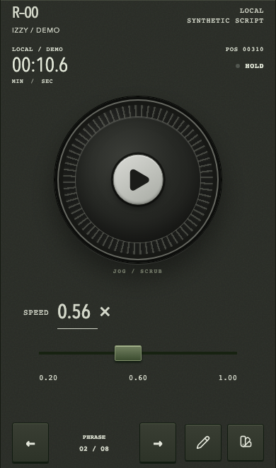

OrbitНазвание и значение скорости вместе; крупнее шкала и отдельная зона перелистывания.Открыть пульт ↗
GrooveНазвание и значение скорости собраны; шкала и нижние действия получили больше пространства.Открыть пульт ↗
ClearНазвание и значение скорости собраны; шкала и нижние действия получили больше пространства.Открыть пульт ↗
ArcadeСкорость сбоку на коротком экране; колесо и отдельный Play сохраняют размер.Открыть пульт ↗
SignalНазвание и значение скорости собраны; шкала и нижние действия получили больше пространства.Открыть пульт ↗
VectorНазвание и значение скорости собраны; шкала и нижние действия получили больше пространства.Открыть пульт ↗
FoundryНазвание и значение скорости собраны; шкала и нижние действия получили больше пространства.Открыть пульт ↗
ObservatoryНазвание и значение скорости собраны; шкала и нижние действия получили больше пространства.Открыть пульт ↗
ThumbprintШкала вынесена из-под ручки; отдельный Play рядом с колесом в landscape.Открыть пульт ↗
OriginalНазвание и значение скорости собраны; шкала и нижние действия получили больше пространства.Открыть пульт ↗